ADDED - GDI scaling (Graphics Device Interface scaling) support
ADDED - GDI scaling (Graphics Device Interface scaling) support
osFinancials5.1.0.109 supports GDI scaling, or Graphics Device Interface scaling. It refers to the process of adjusting the size of graphical elements on a computer screen based on the display resolution and pixel density. The Graphics Device Interface (GDI) is a component of the Windows operating system responsible for rendering graphical elements such as text, images, and graphical user interface (GUI) elements.
As display technologies advance, screen resolutions increase, and devices with different pixel densities become more prevalent, it becomes essential to scale the graphical elements appropriately. GDI scaling helps ensure that these elements appear at a reasonable size and are visually consistent across various displays.
Windows operating systems include a feature called Display Scaling, which allows users to adjust the size of text, apps, and other items on the screen. GDI scaling plays a role in this process by ensuring that the graphical elements are resized correctly without losing clarity or becoming pixelated.
In essence, GDI scaling helps provide a more consistent and visually pleasing user experience on displays with different resolutions and pixel densities, ensuring that the graphical elements are appropriately sized and easy to read or interact with.
Additional Zoom in / Zoom out features
In addition to the Display resolution and scaling settings, in osFinancials5.1, there is an additional feature in some components that supports the zoom in and zoom out functionality. This feature allows users to adjust the font size in Spreadsheet reports, Spreadsheet Export/Import functions, and the Ledger analyser to view and analyse financial reports (such as the Trial balance, Income Statement and Balance sheet). By using the zoom in feature, users can increase the font size for better readability, while the zoom out feature enables a decrease in font size.
This flexibility in adjusting the data font size enhances the user experience when working with Spreadsheet reports and financial statements in osFinancials5.1, providing customization options to suit individual preferences or specific viewing needs.
Windows Display Settings - Scaling
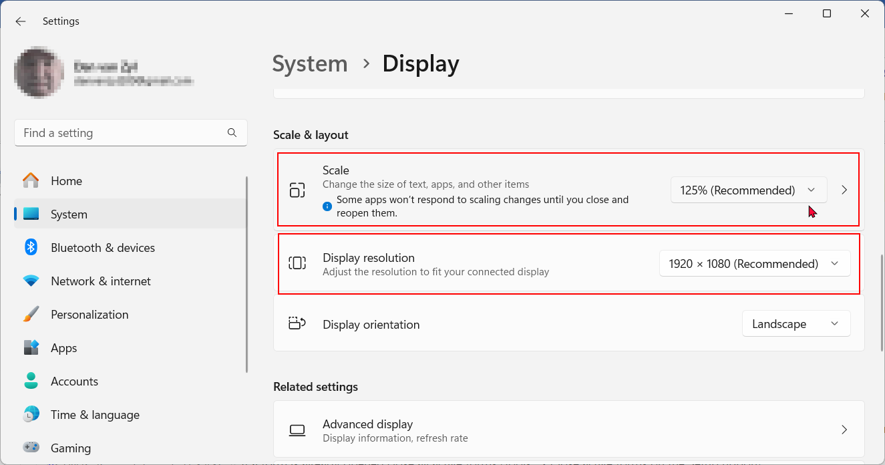
Windows Display Settings
The basic Windows Display Settings may depend on your device, system settings and monitors connected and configures on your system.
Some common options is:
- Display resolution = 1920 x 1080 (Recommended) + Scaling 125% (Recommended) + Scaling 150% + Scaling 175%
- Display resolution = 1680 x 1050 + Scaling 125% (Recommended) + Scaling 150% + Scaling 175%
- Display resolution = 1600 x 900 + Scaling 125% (Recommended) + Scaling 150% + Scaling 175%
- Display resolution = 1400 x 1050 + Scaling 125% (Recommended) / Scaling 150% / Scaling 175%
- Display resolution = 1400 x 900 + Scaling 100% (Recommended) + Scaling 125% / Scaling 150%
- Display resolution = 1360 x 768 + Scaling 100% (Recommended) + Scaling 125%
Some additional information on these settings:
- Display Resolution: This represents the number of pixels on your screen, typically denoted by the width and height in pixels. For example, "1920 x 1080" means the screen has a resolution of 1920 pixels in width and 1080 pixels in height.
- Scaling: Scaling is the adjustment of the size of text, apps, and other items on the screen. This is particularly important on high-DPI (dots per inch) displays to ensure that content appears at an optimal size. The scaling percentages you mentioned (e.g., 125%, 150%, 175%) indicate how much the interface elements are scaled compared to their original size.
- Recommended Settings: The "Recommended" settings are often suggested by the operating system based on your hardware configuration and display properties. These settings are intended to provide an optimal balance between readability and screen real estate.
- Custom Settings: Users can customize display settings based on their preferences and the capabilities of their monitors. For example, choosing a lower resolution with higher scaling can make text and icons larger, which may be useful for individuals with visual impairments.
- High-DPI Displays: Scaling becomes especially important on high-DPI displays, where the pixel density is higher. Without proper scaling, text and graphical elements might appear too small and be challenging to read or interact with.
Users often choose display settings based on their preferences, the size of their monitor, and individual visual comfort. The goal is to find a balance between having enough screen real estate and ensuring that the displayed content is easily readable and usable. Keep in mind that the specific options available may vary depending on your version of Windows and the capabilities of your graphics hardware.
Windows Display Settings Tested in osFinancials5.1.0.109
osFinancials5.1's default themes and configuration settings are optimized for a display resolution of 1920 x 1080 with a scaling of 125%. If you decide to use a higher scaling percentage (e.g., 150%, 175%) or choose a different display resolution and / or scale settings, you may encounter display issues with some large grid and forms (e.g. Debtors, Creditors, Stock items and Documents) within the osFinancials interface.
Adjusting these settings should help ensure a proper display and functionality when using different scaling options or display resolutions beyond the recommended 1920 x 1080 with 125% scaling.
Display resolution = 1920 x 1080 (Recommended) + Scaling 125% (Recommended)
osFinancials5.1.0.109 interface, grids and forms display great.
But when scaling of 150% or 175% is applied, similar display issues as with the Display resolution = 1366x768 + Scaling 100% on certain grid / forms may occur.
When opening these Debtor / Creditor form Stock item grid and form Documents grid and form the Unpin Ribbon or the Tablet mode setting in the Colors.ini file in the Theme folder may address some of these issues.
When opening these forms and grids, in the default mode (Pin the ribbon - Show ribbon) there could be rendering display issues.
To address this, you can follow these steps:
- Unpin - Hide the ribbon or use Tablet mode before accessing these grids and forms.
- If a form is already opened close all active forms (Tools → Close active forms (Setup ribbon)).
- Unpin - Hide the ribbon or use Tablet mode ( style=4 ) in the colors.ini file.
- Automatically hide Taskbar
- Relaunch the grids and / or forms. The display should be OK.
Stock item form - Display resolution = 1920 x 1080 (Recommended) + Scaling 125% (Recommended)
It appears that the Stock Edit form at Display resolution = 1920 x 1080 (Recommended) + Scaling 125% (Recommended) list some grid columns after the last tab (in this example, Location-Batches-Serials tab).
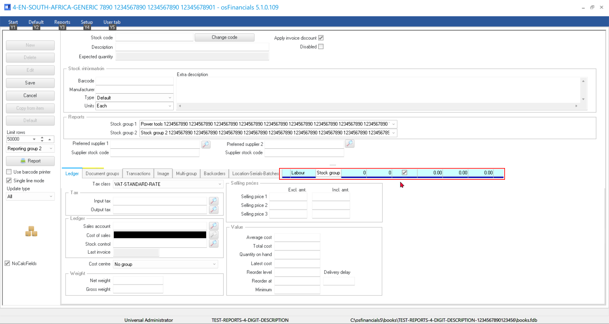
Grids and Forms Display resolution = 1366 x 768 + Scaling 100%
Similar issues appear at various Windows Display Settings for all options up to Display resolution = 1920 x 1080 (Recommended) + Scaling 150% / 175%, but
Display resolution = 1920 x 1080 (Recommended) + Scaling 125% seems to display correct.
Debtors / Creditors
Hide Ribbon tabs (Unpin before opening form) - OK
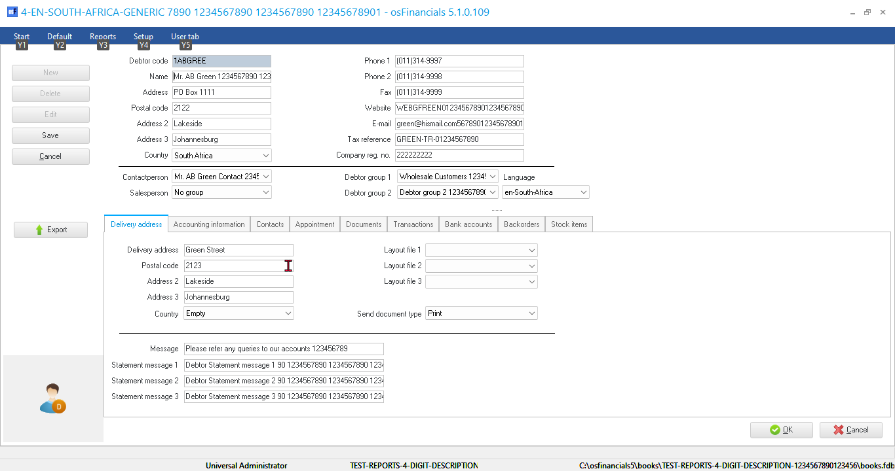
Hide Ribbon tabs (Pin before opening form) - double-click to hide - Display issues
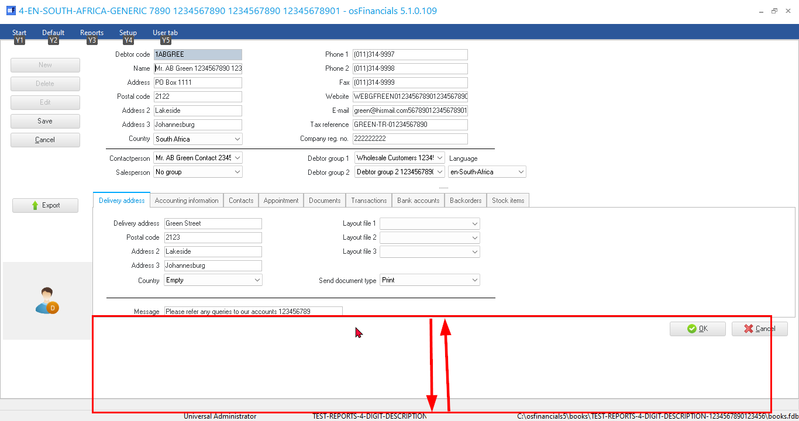
Hide Ribbon tabs (Pin after opening form) - Display issues - e.g. on Delivery address tab, only the Message first line is displayed - Message 1, Message 2, Message 3 is not displayed and cannot scroll.
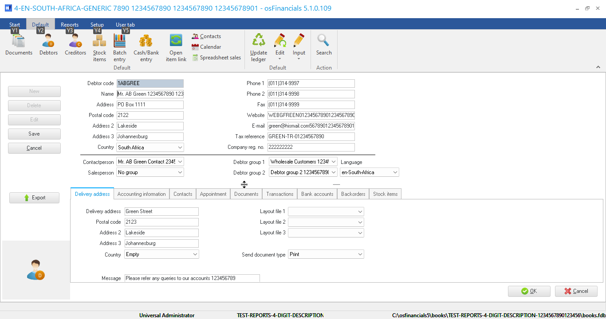
Stock items
Stock item grid
Hide Ribbon tabs (Unpin before opening form) - OK
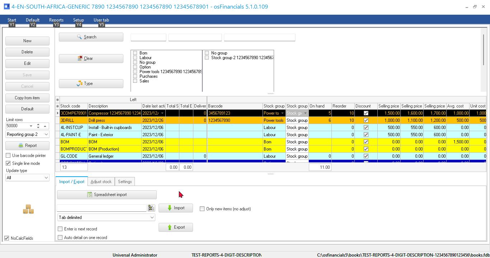
Hide Ribbon tabs (Pin before opening form) - double-click to hide - Display issues
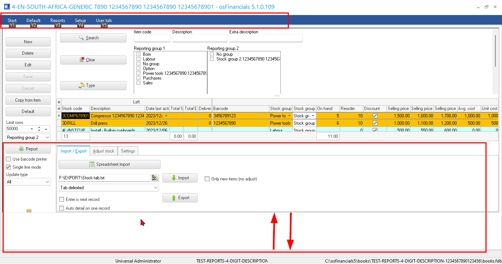
Hide Ribbon tabs (Pin after opening form) - Display issues - e.g. on Delivery address tab, only the Message first line is displayed - Message 1, Message 2, Message 3 is not displayed and cannot scroll.
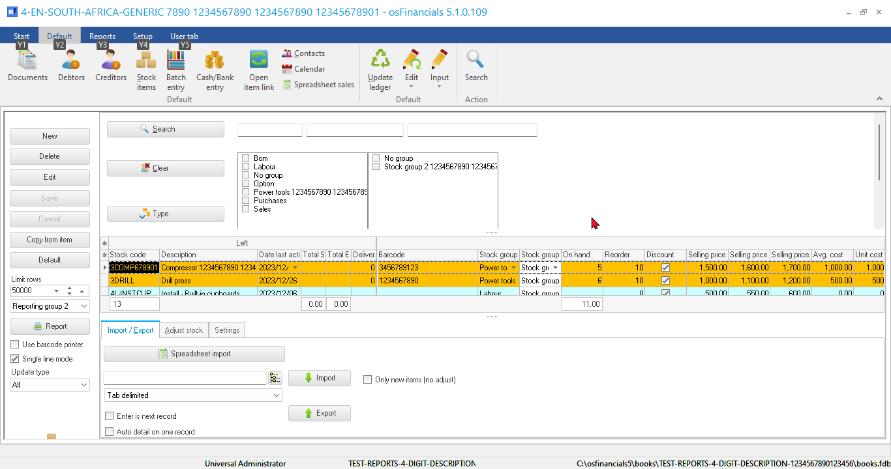
Hide Ribbon tabs (Pin after opening form) - Display issues
Stock item form
Hide Ribbon tabs (Unpin after opening form) - Display issues
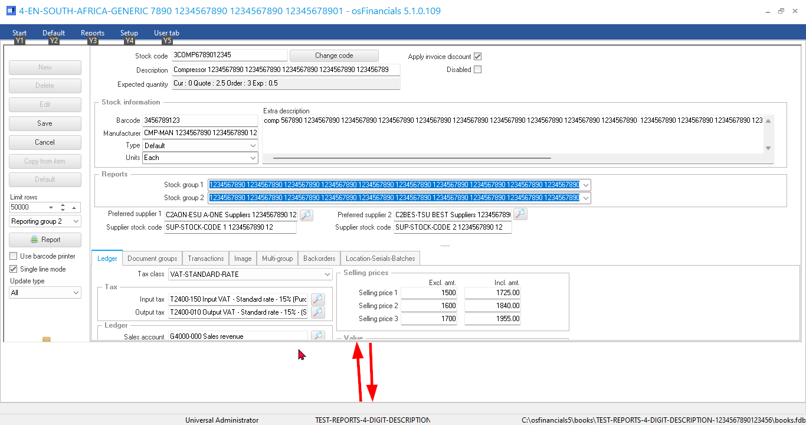
Documents
Document grid
Hide Ribbon tabs (Unpin before opening form) - OK - But Layout file 4 is not displayed on the sidebar.
NOTE - if Display resolution = 1920 x 1080 (Recommended) + Scaling 125% (Recommended) is selected, Layout file 4 is displayed on the sidebar
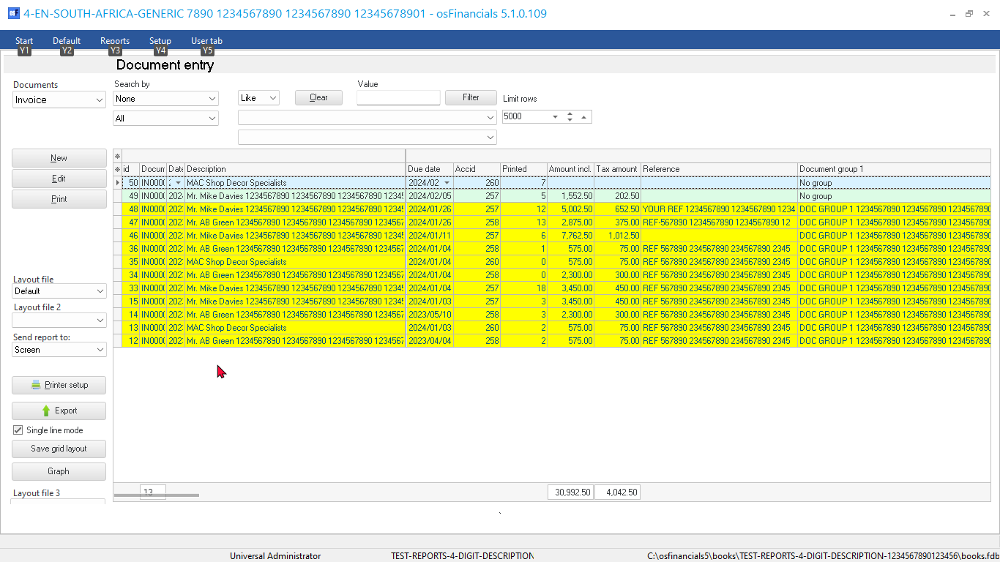
Hide Ribbon tabs (Pin after opening form) - Display issues
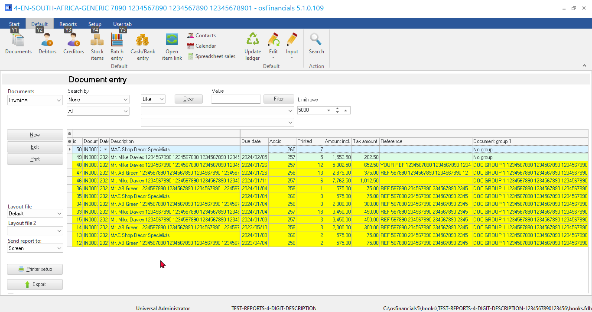
Document edit form
Hide Ribbon tabs (Unpin before opening form) - OK
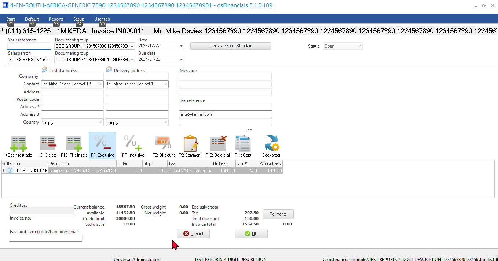
Hide Ribbon tabs (Pin after opening form) - Display issues
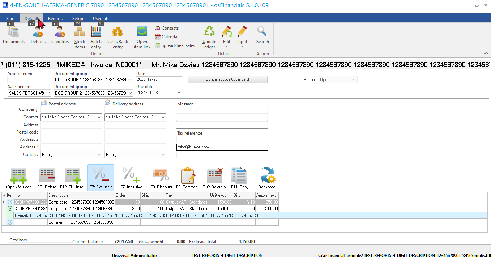
Hide Ribbon tabs (Pin after opening form) - Display issues - e.g. on Footer - Current balance and Invoice total is displayed, rest of the Credit limit, Available limit, etc. including the OK / Cancel buttons not displayed.
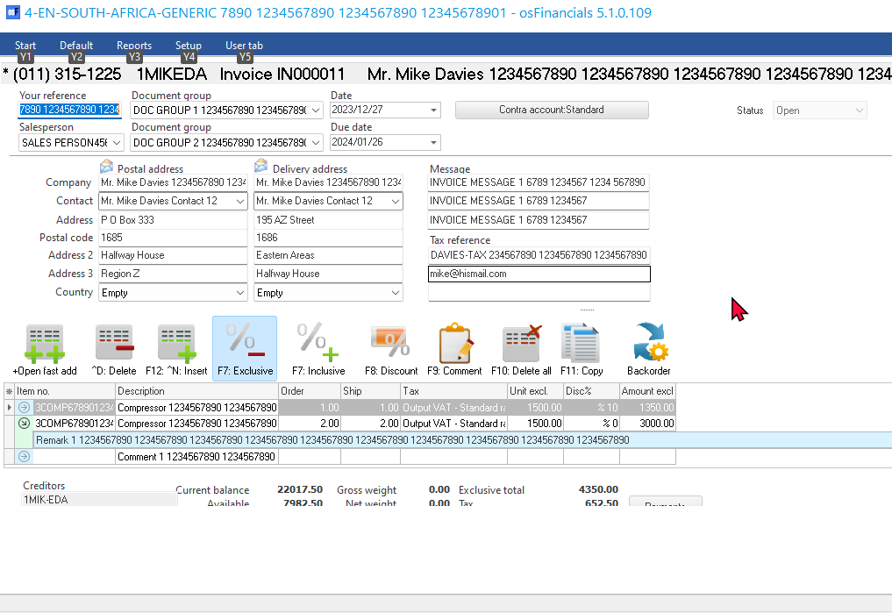
Show Ribbon tabs (Pin after opening form) - Display issues - e.g. on Footer - Current balance and Invoice total is displayed, rest of the Credit limit, Available limit, etc. including the OK / Cancel buttons not displayed.